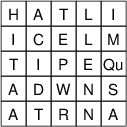
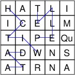
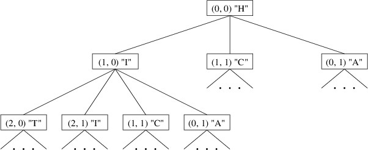
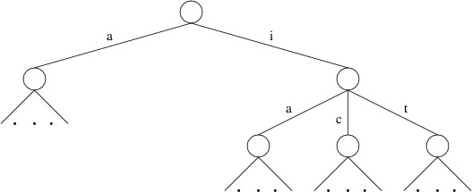

Tries in Word Games
Tries in Word Games
One application of tries is for implementing word games such as Boggle® or Scrabble®. This section discusses how a trie can be used to reduce dramatically the amount of time spent searching for words in such games. We will focus specifically on Boggle, but the same principles apply to other word games as well.
A Boggle game consists of either 16 or 25 dice with letters on their faces, along with a tray containing a 4 x 4 or 5 x 5 grid for holding these dice. The face of each die contains a single letter, except that one face of one die contains “Qu”. The tray has a large cover such that the dice can be placed in the cover and the tray placed upside-down on top of the cover. The whole thing can then be shaken, then inverted so that each die ends up in a different grid cell, forming a random game board such as:

Players are then given a certain amount of time during which they compete to try to form as many unique words as they can from these letters. The letters of a word must be adjacent either horizontally, vertically, or diagonally, and no die may be used more than once in a single word. There is a minimum word length, and longer words are worth more points. For example, the above game board contains the words, “WITCH”, “ITCH”, “PELLET”, “TELL”, and “DATA”, among many others.

Suppose we want to build a program that plays Boggle against a human opponent. The program would need to look for words on a given board. The dictionary of words can of course be stored in a trie. In what follows, we will show how the structure of a trie can be particularly helpful in guiding this search so that words are found more quickly.
We can think of a search from a given starting point as a traversal of a tree. The root of the tree is the starting point, and its children are searches starting from adjacent dice. We must be careful, however, to include in such a tree only those adjacent dice that do not already occur on the path to the given die. For example, if we start a search at the upper-left corner of the above board, its children would be the three adjacent dice containing “I”, “C”, and “A”. The children of “I”, then, would not include “H” because it is already on the path to “I”. Part of this tree would look like this:

Note that this tree is not a data structure - it need not be explicitly stored anywhere. Rather, it is a mathematical object that helps us to design an algorithm for finding all of the words. Each word on the board is simply a path in this tree starting from the root. We can therefore traverse this tree in much the same way as we outlined in the previous section for tries. For each node in the tree, we can look up the path leading to that node, and output it if it is a word in the dictionary.
In order to be able to implement such a traversal, we need to be able to find the children of a node. These children are the adjacent cells that are not used in the path to the node. An efficient way to keep track of the cells used in this path is with a bool[ , ] of the same size as the Boggle board - a value of true in this array will indicate that the corresponding cell on the board has been used in the current path. The children of a node are then the adjacent cells whose entries in this array are false.
A preorder traversal of this tree will therefore need the following parameters (and possibly others, depending on how we want to output the words found):
- The row index of the current cell.
- The column index of the current cell.
- The bool[ , ] described above. The current cell will have a false entry in this array.
- A StringBuilder giving the letters on the path up to, but not including, the current cell.
The preorder traversal will first need to update the cells used by setting the location corresponding to the current cell to true. Likewise, it will need to update the StringBuilder by appending the contents of the current cell. Then it will need to process the root by looking up the contents of the StringBuilder - if this forms a word, it should output this word. Then it should process the children: for each adjacent cell whose entry in the bool[ , ] is false, it should make a recursive call on that cell. After all the children have been processed, it will need to return the bool[ , ] and the StringBuilder to their earlier states by setting the array entry back to false and removing the character(s) appended earlier.
Once such a method is written, we can call it once for each cell on the board. For each of these calls, all entries in the bool[ , ] should be false, and the StringBuilder should be empty.
While the algorithm described above will find all the words on a Boggle board, a 5 x 5 board will require quite a while for the algorithm to process. While this might be acceptable if we are implementing a game that humans can compete with, from an algorithmic standpoint, we would like to improve the performance. (In fact, there are probably better ways to make a program with which humans can compete, as this search will only find words that begin near the top of the board.)
We can begin to see how to improve the performance if we observe the similarity between the trees we have been discussing and a trie containing the word list. Consider, for example, a portion of the child labeled ‘h’ in a trie representing a large set of words:

We have omitted some of the children because they are irrelevant to the search we are performing (e.g., there is no die containing “E” adjacent to “H” on the above game board). Also, we are assuming a minimum word length of 4; hence, “ha”, “hi”, and “hit” are not shown as words in this trie.
Notice the similarity between the trie portion shown above and the tree shown earlier. The root of the tree has children representing dice containing “I” and “A”, and the former node has children representing dice containing “T”, “C”, and “A”; likewise, though they are listed in a different order, the trie has children labeled ‘i’ and ‘a’, and the former node has children labeled ’t’, ‘c’, and ‘a’.
What is more important to our discussion, however, is that the trie does not have a child labeled ‘c’, as there is no English word beginning with “hc”. Similarly, the child labeled ‘i’ does not have a child labeled ‘i’, as there is no English word beginning with “hii”. If there are no words in the word list beginning with these prefixes, there is no need to search the subtrees rooted at the corresponding nodes when doing the preorder traversal. Using the trie to prune the search in this way ends up avoiding many subtrees that don’t lead to any words. As a result, only a small fraction of the original tree is searched.
In order to take advantage of the trie in this way, we need a method in the trie implementation to return the child having a given label, or null if there is no such child. Alternatively, we might provide a method that takes a string and returns the trie that this string leads to, or null if there is no such trie (this method would make it easier to handle the die containing “Qu”). Either way, we can then traverse the trie as we are doing the preorder traversal described above, and avoid searching a subtree whenever the trie becomes null.
This revised preorder traversal needs an extra parameter - a trie giving all completions of words beginning with the prefix given by the StringBuilder parameter. We will need to ensure that this parameter is never null. The algorithm then proceeds as follows:
- From the given trie, get the subtrie containing the completions of words beginning with the contents of the current cell.
- If this subtrie is not null:
- Set the location in the bool[ , ] corresponding to the current cell to true.
- Append the contents of the current cell to the StringBuilder.
- If the subtrie obtained above contains the empty string, output the contents of the StringBuilder as a word found.
- Recursively traverse each adjacent cell whose corresponding entry in the bool[ , ] is false. The recursive calls should use the subtrie obtained above.
- Set the location in the bool[ , ] corresponding to the current cell to false.
- Remove the contents of the current cell from the end of the StringBuilder (i.e., decrease its Length by the appropriate amount).
We would then apply the above algorithm to each cell on the board. For each cell, we would use a bool[ , ] whose entries are all false, an empty StringBuilder, and the entire trie. Note that we have designed the preorder traversal so that it leaves each of these parameters unchanged; hence, we only need to initialize them once. The resulting search will find all of the words on the board quickly.